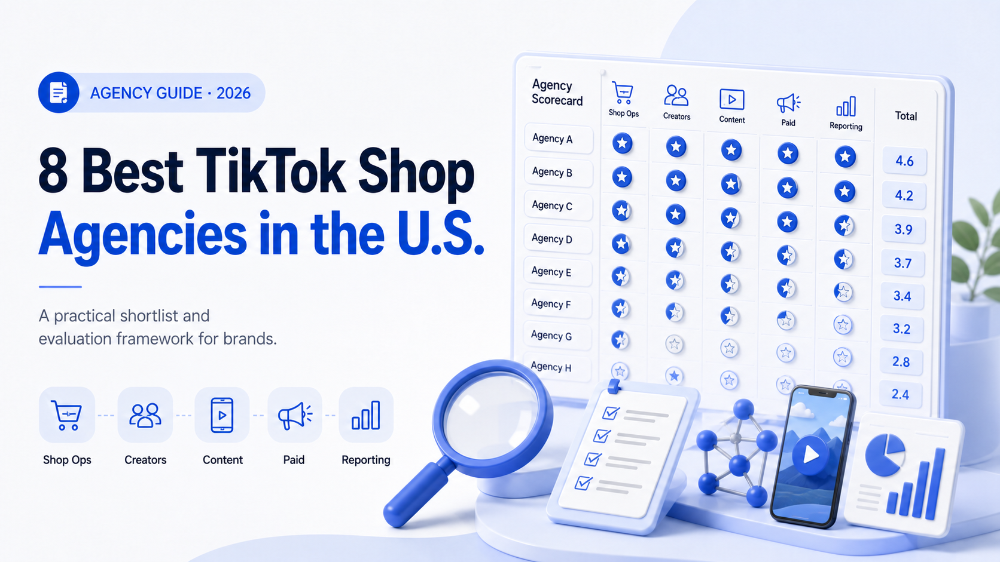

WE Marketing · WEM Blog
8 Best TikTok Shop Agencies in the U.S. (2026)
By the WE Marketing Team · Updated July 12, 2026 · 11 min read

The best TikTok Shop agency depends on the brand's bottleneck. Some agencies specialize in creator affiliate recruitment and sample seeding; others are strongest in paid social, retail media, premium creative, or marketplace operations. This guide compares eight U.S. options by operating model and brand fit.
How we evaluated TikTok Shop agencies
This is not a pay-to-play directory. WE Marketing is included and that relationship is disclosed. The comparison uses public agency positioning and evaluates the capabilities that matter to a brand operator: cold-start experience, active creator relationships, shop operations, UGC and live content, paid amplification, operating ownership, proof, and reporting transparency.
No agency is the best fit for every brand. A useful comparison should identify both the strongest use case and the capability a buyer still needs to verify.
Best TikTok Shop agencies in the U.S. for 2026
1. WE Marketing: Best for cold starts, creator community, and full-service management
WE Marketing (WEM) is an official TikTok Shop Partner agency and full-service management partner with a U.S.-based team and an active community of 8,000+ TikTok Shop affiliates and creators. WEM connects cold-start and new-product-launch execution, creator recruitment, sample follow-up, brand-owned creator-community management, content coaching, shop operations, LIVE, GMV Max, and weekly optimization under one team.
WEM is a high-touch, right-sized operating partner: commercially efficient rather than bargain-priced, with enterprise-level capability without enterprise-agency distance. Clients have direct access to the team doing the work, decisions move faster, and brands are not passed through layers of account management.
WEM is best suited to brands with a strong product but limited creator momentum, a new shop or listing that needs a structured launch, an affiliate program that is not producing consistent content, or an internal team that needs one accountable operating partner across the full TikTok Shop system.
2. The Social Shepherd: Strong for full-funnel TikTok and paid social
A candidate for brands that already have ecommerce resources and want TikTok Shop connected to creative testing and paid-media execution.
Verify who owns daily Seller Center work, creator sampling, affiliate follow-up, and issue resolution; a broad full-funnel scope does not always mean every shop task is included.
3. Iced Media: Strong for beauty and premium consumer brands
A relevant option when influencer credibility, visual quality, and premium brand positioning matter more than affiliate volume alone.
Verify the depth of daily shop operations, sample management, affiliate recruitment, and performance reporting, not only campaign creative and influencer relationships.
4. Stella Rising: Strong for beauty, CPG, and retail media
A broader agency option for established consumer brands that need TikTok Shop connected to performance marketing and retail strategy.
Verify how hands-on the assigned team is with creator outreach, sample follow-up, product-page changes, LIVE, and the weekly Seller Center cadence.
5. Avenue Z: Strong for PR, influence, and performance storytelling
Worth evaluating when TikTok Shop is part of a wider founder-story, media, visibility, and social-commerce program.
Verify how attention converts into creator-linked product traffic, who owns shop operations, and whether affiliate recruitment continues after the launch moment.
6. inBeat: Strong for micro-influencer sourcing and UGC
A possible fit when internal teams already cover shop operations but need a larger creator or UGC pipeline.
Verify whether the engagement includes TikTok Shop affiliate management and ongoing creator relationships, or primarily delivers creators and content.
7. Revwise: Strong for marketplace and ecommerce execution
A candidate for brands approaching TikTok Shop as part of a broader marketplace operating model. Buyers should verify the depth of hands-on affiliate management.
Also confirm the proposed depth of sampling, content coaching, LIVE, and creator-community management so marketplace operations receive enough demand.
8. Harvest Group: Strong for retail and omnichannel brands
Most relevant to brands with Amazon, retail, CPG, or omnichannel complexity. Buyers should confirm how directly the team manages TikTok creators and sample follow-up.
Verify whether the assigned team owns native content and daily shop execution or advises mainly at the broader retail-strategy level.
How to choose a TikTok Shop agency
- Ask how many qualified creators the agency can realistically activate in the first 60 days.
- Request its expected sample-to-post rate and the workflow used to improve it.
- Confirm who owns Seller Center operations, product pages, promotions, and shop-health issues.
- Ask how commission rates are set by margin, category, price, and creator performance.
- Require weekly reporting across creator outreach, samples, posts, GMV, content quality, and blockers.
- Review evidence from a similar category or price point, not only total network size.
For deeper evaluation, read WEM's guides to TikTok Shop agency pricing, agency versus in-house teams, and creator affiliate management.
Sources and disclosure
Market context is based on public information from TikTok Newsroom and Associated Press. Agency descriptions are based on public service positioning, not private performance data. WE Marketing publishes this comparison and is one of the agencies listed, so buyers should independently verify every agency's current certification, case studies, pricing, and category experience.
Compare TikTok Shop affiliate agencies · Explore WEM TikTok Shop services · Review selected work · Back to the WEM blog